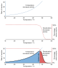

denaturation

Definition: In biochemistry, denaturation is a process in which proteins or nucleic acids lose the quaternary structure, tertiary structure, and secondary structure which is present in their native state, by application of some external stress or compound, such as a strong acid or base, a concentrated inorganic salt, an organic solvent (e.g., alcohol or chloroform), agitation and radiation, or heat. If proteins in a living cell are denatured, this results in disruption of cell activity and possibly cell death. Protein denaturation is also a consequence of cell death. Denatured proteins can exhibit a wide range of characteristics, from conformational change and loss of solubility or dissociation of cofactors to aggregation due to the exposure of hydrophobic groups. The loss of solubility as a result of denaturation is called coagulation. Denatured proteins lose their 3D structure, and therefore, cannot function.
Source: Wikipedia
Wikipedia Page (Something wrong with this association? Let us know.)
Wikidata Page (Something wrong with this association? Let us know.)